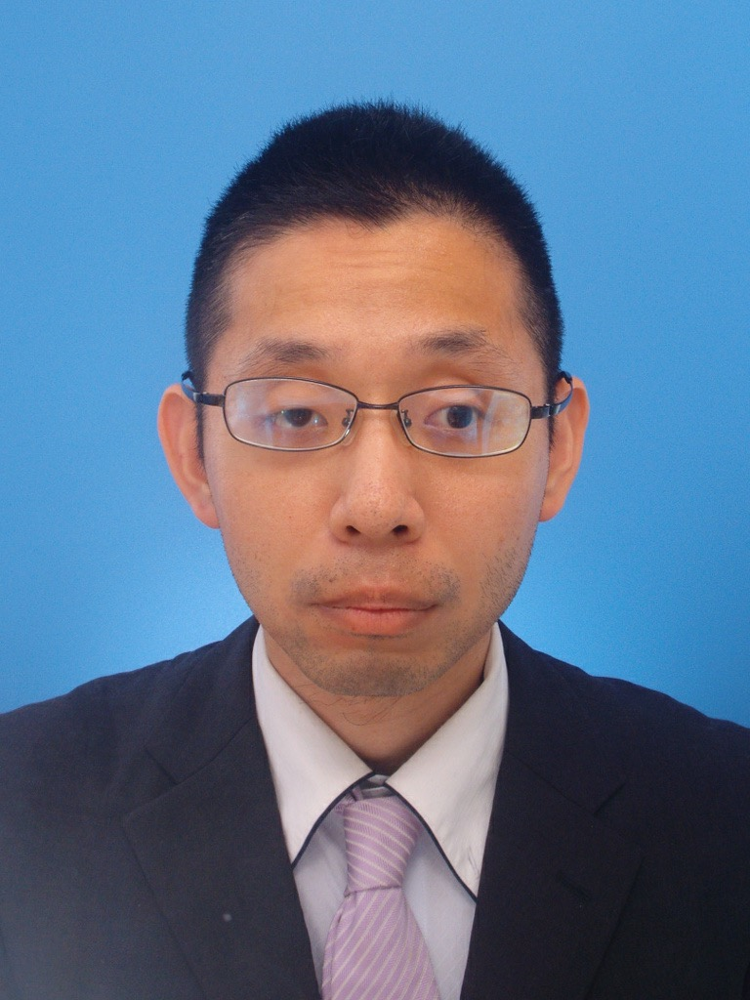

北澤 直樹
英語版(English version)
リンクはご自由にお貼りください、質問やご希望等もご自由に。できる限り色々対応したく思います。
自己紹介
名前や所属
北澤 直樹
naokikitazawa.formath(at)gmail.com (Gmail:メインアドレスより転送)
n-kitazawa@imi.kyushu-u.ac.jp (2023/6/1--2024/3/31: 予定)
下のアドレスへ送られたメールは(下のアドレスが使えるうちは)上のアドレスへと転送されます。
※ (at) → @
2019/7 (古すぎて大変申し訳ございませんが)撮影した写真

大阪公立大学数学研究所 特別研究員
(受け入れ教員: 田丸 博士 教授)
(非被雇用)
自身は現在福岡市在住
Curriculum Vitae(履歴)
Achievement(業績)
専門: 数学(幾何学や幾何学を中心とした数学全般への応用)
1 可微分写像と(可微分)多様体の幾何学的理論.
- 可微分写像の特異点論; 大域的特異点論(大域的な可微分写像定義域多様体の性質).
- 多様体の幾何学特に代数的・微分位相幾何学(への上の「可微分写像の大域的特異点論」の応用).
- 可微分写像の逆像の連結成分全体の空間として定まるグラフ(Reeb グラフ)や多面体(Reeb 空間)に関連した
微分位相幾何学の問題.
2 多面体の位相幾何学.
- 前述の Reeb グラフや Reeb 空間それらに近い多面体の位相的性質.
3 初等的な実代数幾何学.
- 実代数的な関数の、可微分写像の特異点論や微分位相幾何学や初等的な実代数幾何学を介した構成等.
4 数学の応用(注: 常に初心者として勉強中)
- 幾何学特に「図形の低次元空間への射影や写像」のデータセット解析他機械学習や諸科学技術のあらゆる場面への応用(の可能性の探求)
他にもいろいろな幾何学、幾何学を超えて数学全般下手の横好きで興味があり常に勉強中です。また、あらゆる数学者や数学にかかわる人々との交流を
楽しませて頂いております(みなさんいつもこんな私へのご協力ありがとうございます)。
詳細な研究の紹介(Only Japanese now)
研究生活に関連しよく利用されるであろうファイル(テンプレート: ご自由にお使いください)
研究集会参加者名簿フォーマット
リンク
研究集会「特異点論とトポロジー」
一応受け入れ教員の佐伯先生とともに世話人として関わらせて頂いたセミナーです。参加、協力して下さった皆さん、ありがとうございます。
余談ですが、このセミナーのお蔭で縁ありこの一連の HP 達を立ち上げることができました(佐伯先生ありがとうございます)。
「可微分写像の特異点セミナー」
北澤が最初のポスドクの頃に立ち上げ、その後社会人時も大変珍しく畏れ多すぎる話、在野で運営に携わらせて頂いた、
専門分野「可微分写像の特異点」に関わる
セミナーのページです。HP を管理して下さってきた奥田喬之さん(工学院大学)、参加し協力して下さった皆さん、講演して下さった皆さん、ありがとうございます。
なお次回は現時点で未定(?)です。ちなみにこのセミナーのページのアドレス、現在の所属先のアドレスから転送される Gmail のものとなっております。
Last update 2024/1/21.